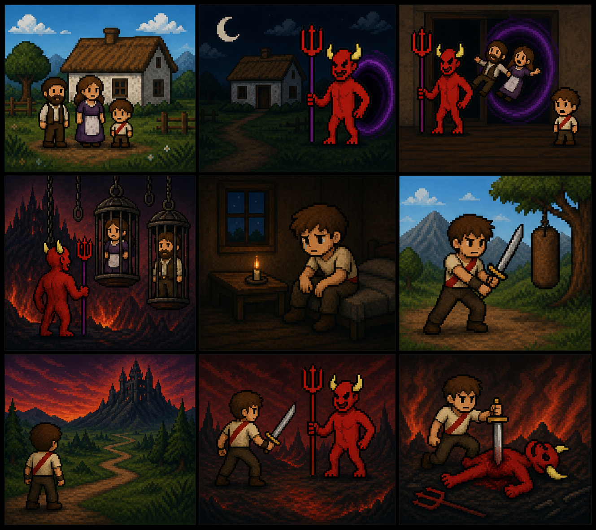

| HELBURUA |
|---|
| Jolas honen helburua zerua salbatzea da. Deabruak agertu dira eta hil egin behar dituzu. Jolasean zehar oztopoak aurkituko dituzu. Deabru nagusia hiltzean zerua salbatuta egongo da eta jolasa irabazi egingo duzu. |
| ISTORIOA |
|---|
| Duela urte asko, familia bat oso lasai bizi zen baserri batean, egun guztiak berdinak ziren. Baina egun batean deabrua agertu zen eta berailen bizitza aldatu zuen. Gurasoak bahitu zituen eta haurra bakarrik utzi zuen. Haurrtxoa minarekin hazi zen baina bihotzean helburu bakarra zuen: bere familia mendekatzea. Urteak igaro ondoren, entrenatzen hasi zen egunero indartsuago bihurtzeko, eta egun batean deabrua bilatzera joan zen. |
|
 |